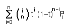

Bézier1 スプライン
 技術的には、PostScript は 3 次 Bézier スプラインを使用します。各制御点は、対応する端点におけるスプラインの傾きを決定します。TrueType が使用している 2 次 Bézier スプラインでは、2 個の端点の間には 1 個の制御点しかなく、その点が隣接する両方の端点における傾きを決定します。両フォーマットとも直線 (これは線形な Bézier スプラインです) も併用します。
技術的には、PostScript は 3 次 Bézier スプラインを使用します。各制御点は、対応する端点におけるスプラインの傾きを決定します。TrueType が使用している 2 次 Bézier スプラインでは、2 個の端点の間には 1 個の制御点しかなく、その点が隣接する両方の端点における傾きを決定します。両フォーマットとも直線 (これは線形な Bézier スプラインです) も併用します。
 他の次数の Bézier スプラインを作成することも可能です。4 次スプラインでは 3 個の制御点が存在し、5 次スプラインでは 4 個の制御点が、という具合です。そのなかで我々が関心をもっているのは線形, 2 次と 3 次のスプラインです——それらは TrueType と PostScript で使用されています。
他の次数の Bézier スプラインを作成することも可能です。4 次スプラインでは 3 個の制御点が存在し、5 次スプラインでは 4 個の制御点が、という具合です。そのなかで我々が関心をもっているのは線形, 2 次と 3 次のスプラインです——それらは TrueType と PostScript で使用されています。
左の例は 2 個の制御点をもつ 3 次スプラインで、それぞれ近い側の端点における傾きを決定しています。一方、右に示した例は 2 次スプラインで、1 個の制御点が両側の端点における傾きを決定しています。
一般的に、P0, P1,... Pn というラベルのついた (n+1) 個の点がある場合、P0 と Pn が端点となり (その他はすべて制御点です)、Bézier スプラインを定義する等式は、 となります。点が 2 個のときは、これは単に 2 個の端点を結ぶ線分となります。点が 3 個のときは TrueType で用いられている 2 次スプラインで、4 個のときは PostScript で用いられている 3 次スプラインです。
3 次 Bézier 曲線はのように表示することができます:
x = ax*t3 + bx*t2 + cx*t +dx
y = ay*t3 + by*t2 + cy*t +dy
ここで
| dx = P0.x | dy = P0.y | |
| cx = 3*P1.x-3*P0.x | cy = 3*P1.y-3*P0.y | |
| bx = 3*P2.x-6*P1.x+3*P0.x | by = 3*P2.y-6*P1.y+3*P0.y | |
| ax = P3.x-3*P2.x+3*P1.x-P0.x | ay = P3.y-3*P2.y+3*P1.y-P0.y |
また、2 次 Bézier 曲線は以下のようになります:
| dx = P0.x | dy = P0.y | |
| cx = 2*P1.x-2*P0.x | cy = 2*P1.y-2*P0.y | |
| bx = P2.x-2*P1.x+P0.x | by = P2.y-2*P1.y+P0.y |
そして直線は以下のとおりです:
| dx = P0.x | dy = P0.y | |
| cx = P1.x-P0.x | cy = P1.y-P0.y |
TrueType を PostScript に変換する方法
直線のフォーマット変換には数学は一切必要ありません.
任意の 2 次スプラインは 3 次の表現をもちます (その場合、3 次の項が 0 となる)。3 次のときの端点は 2 次のときと同じです。
CP0 = QP0
CP3 = QP2
3 次表現での 2 個の制御点は、以下のようになります。
CP1 = QP0 + 2/3 *(QP1-QP0)
CP2 = CP1 + 1/3 *(QP2-QP0)
ですから、TrueType から PostScript への変換は自明です。丸めに伴う微小な誤差はありますが、それはほとんど気づかない程度のものです。
(Anish Mehta から、TrueType ではピクセルの中間に位置する点を指定する (すなわち、x や y の値が 1/2 の端数をもつ) ことができるという指摘を受けました。これも PostScript への変換を行うときに丸め誤差を持ち込む原因となり得ます。しかし解決方法は単純です: フォントの EM 正方形を 2 倍に拡大すれば、問題はなくなります)。
PostScript を TrueType に変換する方法
ほとんどすべての 3 次スプラインは 2 次スプラインで正確に表現することができません (それどころか、2 次スプラインを連結しても表現できません)。可能な最良の手段は、3 次曲線をある程度の許容誤差の範囲で近似することです。ここにそれを行う方法を示します:
3 次スプラインが与えられたとしましょう。スプライン上の 2 個の点に注目しましょう。その場合、それらの 2 点における傾きが求める値であるスプラインは、それら 2 個の点の間に 1 本しか引くことができません。(その 2 次曲線は、その区間の端点を端点とし、その制御点は、3 次曲線のその区間の始点と終点における接線の交点です)。
 私はこれを証明できていませんが、3 次スプラインを——右図の 4 分の 1 楕円のごとく、n 本の 2 次スプライン (図では、n=3) へと——「均等に」分割すれば、その制御点同士の中点が曲線上の点となるのにちょうどよい比率になるということが (そう教えられて) 経験的な測定結果により知られています。これはつまり、TrueType ではそれらが補間された点として表現できるということになります。(「均等な」分割とは、t=i/n (ただし 0<i<n) の位置に点を置くことを指します。)
私はこれを証明できていませんが、3 次スプラインを——右図の 4 分の 1 楕円のごとく、n 本の 2 次スプライン (図では、n=3) へと——「均等に」分割すれば、その制御点同士の中点が曲線上の点となるのにちょうどよい比率になるということが (そう教えられて) 経験的な測定結果により知られています。これはつまり、TrueType ではそれらが補間された点として表現できるということになります。(「均等な」分割とは、t=i/n (ただし 0<i<n) の位置に点を置くことを指します。)
FontForge は、曲線が既に 2 次曲線で表現可能になっているかを最初にチェックします——TrueType から変換して 3 次曲線を作った場合、そのような事が起こるでしょう。それに該当する場合、制御点を単純に変換するだけです。
それ以外の場合、FontForge は点の挿入を開始します。まず最初に、スプラインの中央に 1 個の点を追加することから始めます。もし十分によい近似が得られるならそこで停止します。不十分ならば 2 個、3 個……と点の個数を増やして近似をやり直します。
TrueType の座標値は整数しする必要があるので、毎回の検査時には、制御点を整数値に丸めます (曲線上の点に対してはこれを行わないことに注意してください。これは制御点の中点として補間されるので、制御点が整数になっていれば十分なのです)。次に、その結果として生成された 2 次曲線が元の曲線に近いかどうかをチェックします。
FontForge は、曲線の変曲点に新しく点を加えて分割を行う可能性があります (2 次曲線の曲率方向は一定なので、通常は曲率方向が変化する点から先を新しい 2 次曲線に分け、それぞれに上記のアルゴリズムを適用する必要があるだろうからです)。
FontForge が上記のアルゴリズムを使用してうまく近似ができなかった場合、従来の方法に移行します。その手順は以下の通りです:
スプライン上の片方の端点から始め、時折 (すなわち、許容誤差の範囲内で) ある許される 2 次近似が本当に、3 次曲線に十分密接に合致しているかをチェックします。
もしこの近似がうまく行ったら、結果の一部としてそれらを保存し、開始点を 3 次スプラインに沿って、私たちがいま作成した 2 次曲線の端点に向かって延長します。
(指定された点において 2 次近似が存在するとは限らない (例えば交点がたまたま交点だった場合など) ため、何らかの微妙な複雑さが含まれている場合があります。しかしこれらは簡単に解消することができます)。
もちろん、場合によっては、与えられた“3 次曲線”が実際には 2 次曲線であることもあります (3 次の項が 0 である場合)。その最もありふれた原因は、そのフォントの元データが TrueType である場合です。この場合、2 次曲線の制御点は以下のようになります:
QP1 = CP0 + 3/2 * (CP1 - CP0)
私がネット上で読んだ他の情報源では、3 次スプラインに変曲点 (これは 2 次曲線には存在しません) があるかどうかをチェックし、そこで強制的に分割することを提案しています。私の目には、この方法は実際にはより悪い結果をもたらすように見えます。より多くの点が必要になり、近似結果は、変曲点を無視したときほど元の線に近くないように見えます。そういうわけで、その提案は無視することにしました。
OpenType, もう一つの解決法
Adobe と Microsoft は TrueType フォントと PostScript フォントのどちらを格納することも可能なフォントフォーマットを作成することに決定しました。これは OpenType と呼ばれています。これは本質的には TrueType の拡張です。すべての TrueType フォントは正しい OpenType フォントですが、 OpenType フォントは PostScript を含むこともできます。OpenType をサポートするシステムではどれも、PostScript と TrueType の間の変換を必要としないでしょう。
参照
1 Bézier スプラインは Pierre Bézier (1910-1999) によって開発されました。